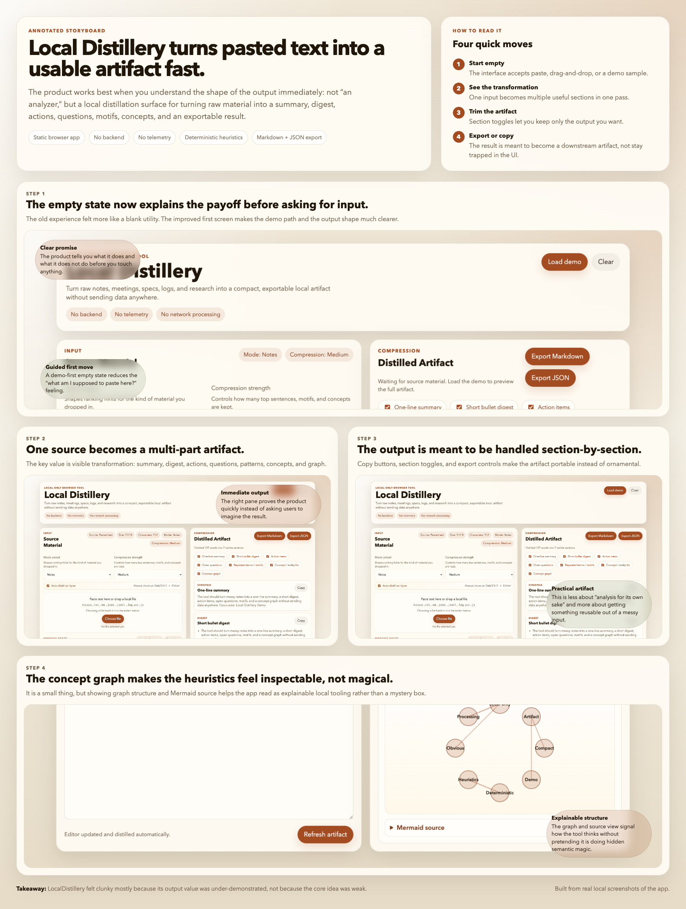

Text distillation
Local Distillery
Turn notes, transcripts, specs, logs, and research into a compact artifact with summary, digest, actions, questions, motifs, concepts, and export.
- Best when the input is messy but the output should stay compact.
- Feels like a local artifact machine, not a chat interface.
Open app
make local-distillery-serve